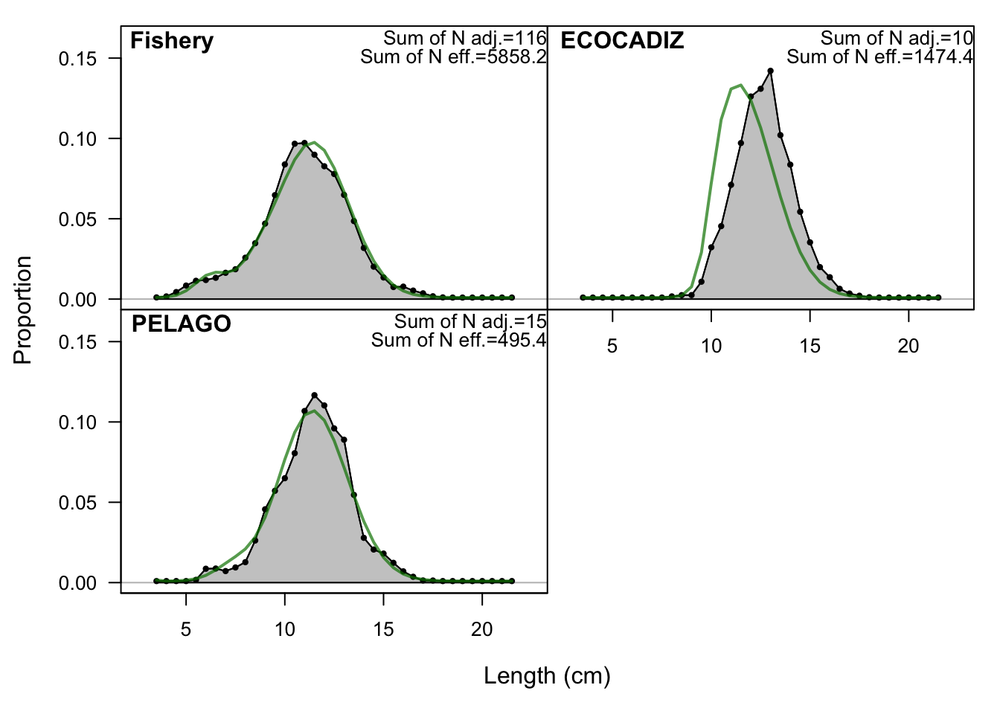
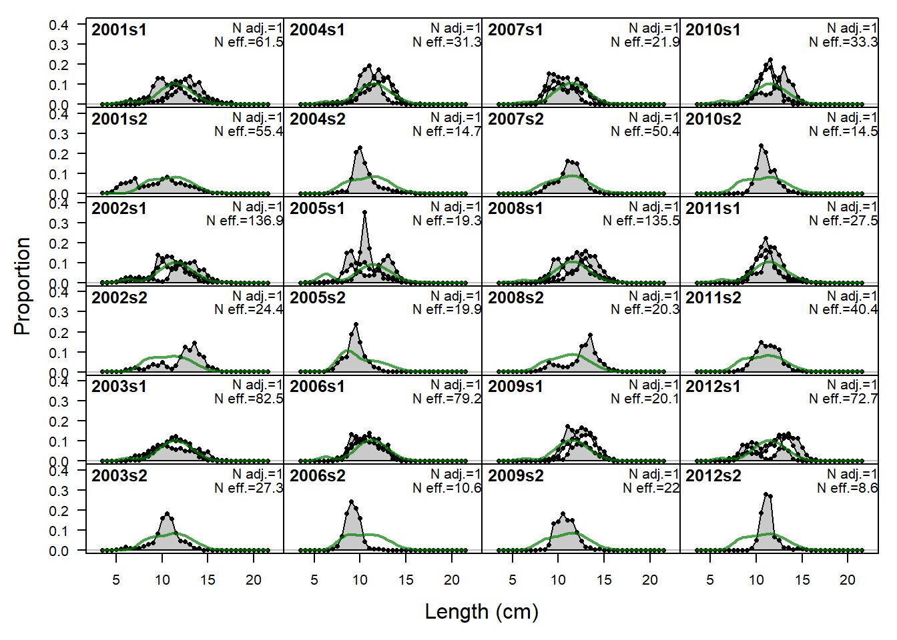
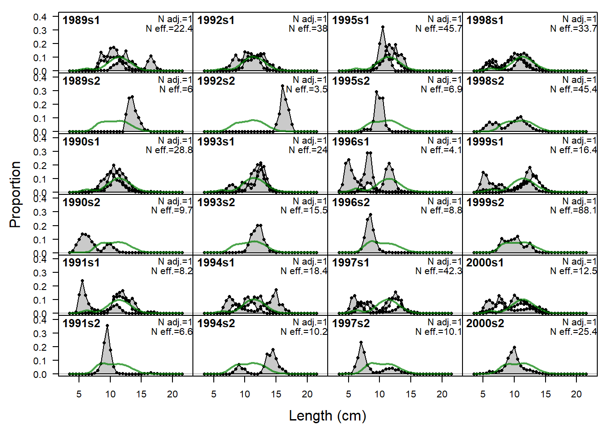
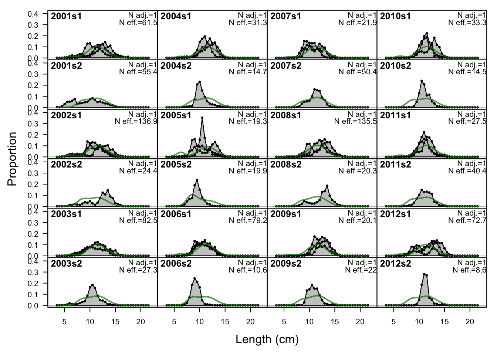
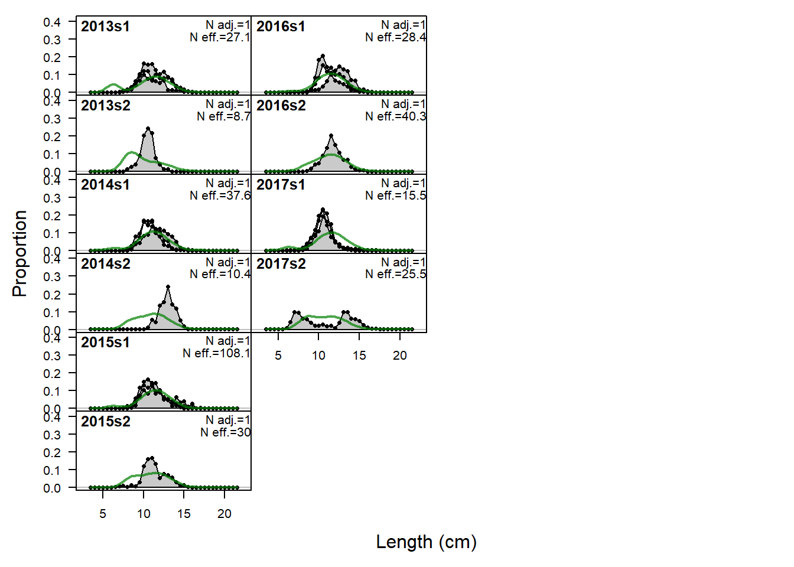
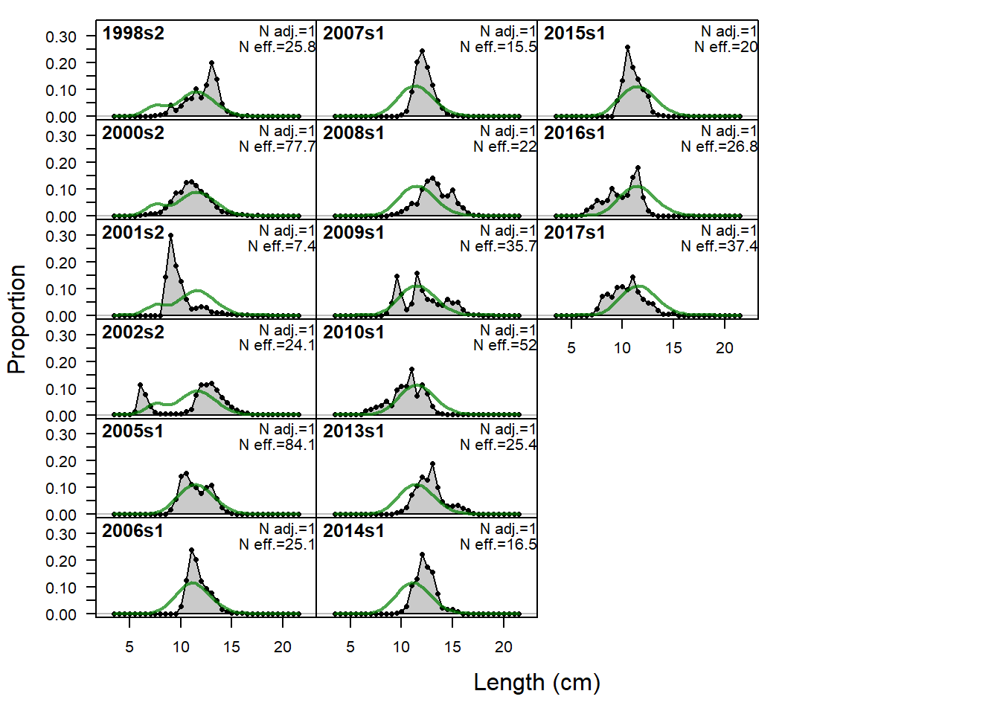
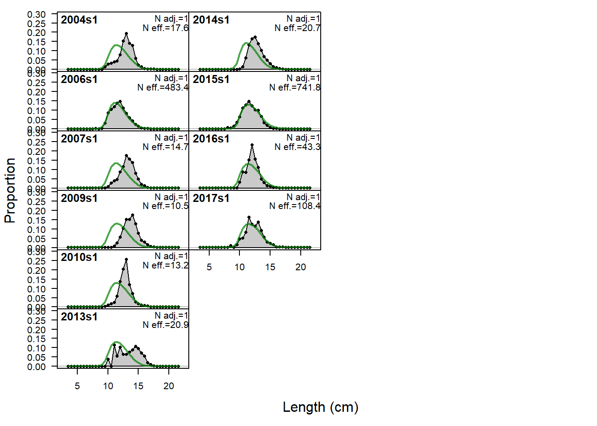
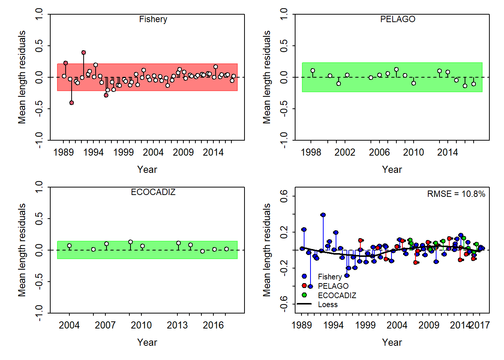

Referencia:
Carvalho, F., Winker, H., Courtney, D., Kapur, M., Kell, L., Cardinale, M., Schirripag, M., Kitakado, T., Yemane, D., Piner, K.R., Maunder, M.N., Taylor, I., Wetzel, C.R., Doering, K., Johnsonm, K.F., Methot, R.D., in press. A Cookbook for Using Model Diagnostics in Integrated Stock Assessments. Fisheries Research.
SSplotComps(replist, subplots = c(21,24))
SSplotComps(replist, subplots = c(1:1))
Un análisis retrospectivo elimina una cierta cantidad de años de los datos del modelo y vuelve a calcular el ajuste. Por lo general, esto se hace varias veces y los resultados se utilizan para buscar patrones retrospectivos (es decir, desviaciones no aleatorias en los parámetros estimados o cantidades derivadas a medida que se eliminan años de datos). Si los resultados del modelo cambian de manera drástica y no aleatoria a medida que se eliminan los datos, el soporte para el modelo es menor. Para obtener más información sobre la teoría y los detalles detrás de los análisis retrospectivos, consulte Hurtado-Ferro et al. 2015 y Legault 2020.
La función retro() se puede utilizar para ejecutar análisis retrospectivos a partir de un modelo de Stock Synthesis existente. Tenga en cuenta que es más seguro crear una copia de su modelo original de Stock Synthesis en el que se ejecuta la retrospectiva, en caso de que haya problemas con la ejecución. Por ejemplo, se podría hacer una retrospectiva de cinco años:
setwd(mod_path)
#------------
# paso 1
#------------
start.retro <- 0 # end year of reference year
end.retro <- 4 # number of years for retrospective e.g.,
#------------
# paso 2
#------------
dirname.base = getwd()
run = "Reference_Run"
model.run <- file.path(dirname.base, run)retro.phk <- r4ss::SSgetoutput(dirvec = file.path(model.run, paste0("retro", start.retro:-end.retro)))## length(dirvec) as input to SSgetoutput: 5
## reading output from C:/MATH4FISH/Math4fish_SS3/quarter/10a_anchcadiz/Reference_Run/retro0/Report.sso
## added element 'replist1' to list
## reading output from C:/MATH4FISH/Math4fish_SS3/quarter/10a_anchcadiz/Reference_Run/retro-1/Report.sso
## added element 'replist2' to list
## reading output from C:/MATH4FISH/Math4fish_SS3/quarter/10a_anchcadiz/Reference_Run/retro-2/Report.sso
## added element 'replist3' to list
## reading output from C:/MATH4FISH/Math4fish_SS3/quarter/10a_anchcadiz/Reference_Run/retro-3/Report.sso
## added element 'replist4' to list
## reading output from C:/MATH4FISH/Math4fish_SS3/quarter/10a_anchcadiz/Reference_Run/retro-4/Report.sso
## added element 'replist5' to list# It is often useful to save the retro model runs as .rdata file for further processing with ss3diags, considering that reading the models with r4ss::SSgetoutput() can be quite time-consuming for more complex models.
save(retro.phk, file = file.path(model.run, "retro.phk.rdata"))check.retro = r4ss::SSsummarize(retro.phk)sspar(mfrow = c(1, 2), plot.cex = 0.8)
SSplotRetro(check.retro, add = T, forecast = T, legend = F, verbose = F, xmin = 2000)## type peel Rho ForecastRho
## 1 SSB 2020 0.3244892270 1.0452230
## 2 SSB 2019 -0.0009997573 0.5352011
## 3 SSB 2018 0.0285438816 -0.2089978
## 4 SSB 2017 -0.5841734340 -0.5442693
## 5 SSB Combined -0.0580350207 0.2067893SSplotRetro(check.retro, add = T, subplots = "F", ylim = c(0, 3.5), forecast = T,
legendloc = "topleft", legendcex = 0.8, verbose = F, xmin = 2000)## type peel Rho ForecastRho
## 1 F 2020 -0.120514087 -0.3353472742
## 2 F 2019 0.041828380 -0.1638073101
## 3 F 2018 -0.053434719 0.1661926102
## 4 F 2017 0.139173396 0.3331037349
## 5 F Combined 0.001763242 0.0000354402Estas Figuras corresponden a un test de ajustes de los índices y composiciones de tallas. El sombreado verde indica que no hay evidencia (p = 0,05) y el sombreado rojo evidencia (p < 0,05) para rechazar la hipótesis de una serie temporal de residuos distribuida aleatoriamente, respectivamente.
El área sombreada (verde/roja) abarca tres desviaciones estándar residuales a ambos lados de cero, y los puntos rojos fuera del sombreado violan el “límite de tres sigma” para esa serie.
Ejecuta el gráfico de prueba y el gráfico de residuos conjuntos para ajustes a los índices de CPUE, donde las líneas verticales con puntos muestran los residuos y las líneas negras sólidas muestran loess más suave en todos los residuos. Los diagramas de caja indican la mediana y cuantiles en los casos en que los residuos de los índices múltiples estén disponibles para un año determinado.
Los errores cuadráticos medios (RMSE) se incluyen en la esquina superior derecha de cada gráfico.
r4ss::sspar(mfrow = c(2,2))
SSplotRunstest(replist, subplots = "cpue", add = TRUE,legendcex = 0.8, verbose = F)## Index runs.p test sigma3.lo sigma3.hi type
## 1 PELAGO 0.767 Passed -0.6250597 0.6250597 cpue
## 2 ECOCADIZ 0.556 Passed -1.3652589 1.3652589 cpueSSplotJABBAres(replist, subplots = "cpue", add = TRUE,legendcex = 0.8, seas="comb", verbose = F)## # A tibble: 3 × 3
## Fleet RMSE.perc Nobs
## <chr> <dbl> <int>
## 1 ECOCADIZ 48.7 13
## 2 PELAGO 37.8 16
## 3 Combined 43.1 29
r4ss::sspar(mfrow=c(2,2),plot.cex=0.8)
SSplotRunstest(replist, subplots = "len", add = TRUE, verbose = F,legendcex = 0.8)## Warning: combining data from multiple seasons## Index runs.p test sigma3.lo sigma3.hi type
## 1 Fishery 0.000 Failed -0.2146313 0.2146313 len
## 2 PELAGO 0.455 Passed -0.2303625 0.2303625 len
## 3 ECOCADIZ 0.691 Passed -0.1391272 0.1391272 lenSSplotJABBAres(replist, subplots = "len", add = TRUE, seas="comb", verbose = F,legendcex = 0.8)## Warning: combining data from multiple seasons## # A tibble: 4 × 3
## Fleet RMSE.perc Nobs
## <chr> <dbl> <int>
## 1 ECOCADIZ 7.5 10
## 2 Fishery 11.7 58
## 3 PELAGO 8.4 15
## 4 Combined 10.8 83